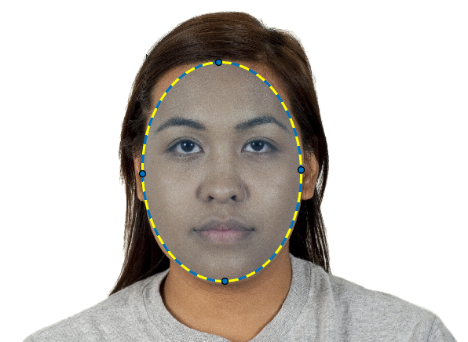
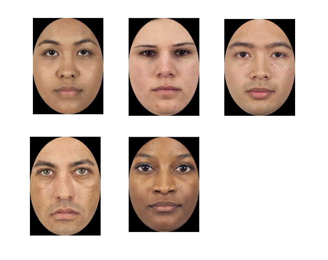

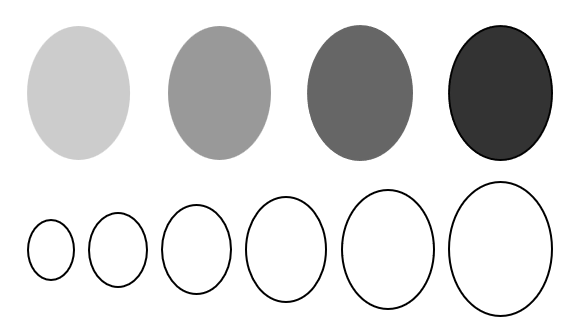
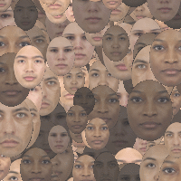
Citation: Wang, G., Alais, D., Blake, R. et al. CFS-crafter: An open-source tool for creating and analyzing images for continuous flash suppression experiments. Behav Res (2022). https://doi.org/10.3758/s13428-022-01903-7
CFS-Crafter allows users to trace up to 5 different objects/faces to create a stimuli sequence. The tracing method is based on MATLAB's ROI-based processing.
Two types of items are supported: Faces and Objects.
Face tracing uses an elliptical ROI which allows users to select the face from the provided source image.
The mean luminance of all traced patches will be adjusted to 4 different levels (0.2, 0.4, 0.6, 0.8), and the maximum dimension of each patch will be adjusted to 6 different levels (16%, 20%, 24%, 28%, 32%, 36%) of the maximum dimension of the stimuli.




Object Tracing is very similar to face tracing, except an assisted freehand ROI was used to trace the edges of the object. In addition to the previously mentioned adjustment in terms of size and mean luminance level, the patches are also rotated to 8 different Orientations (0°, 45°, 90°, 135°,180°, 225°, 270°, 315°).
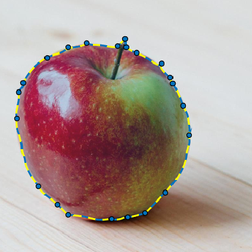
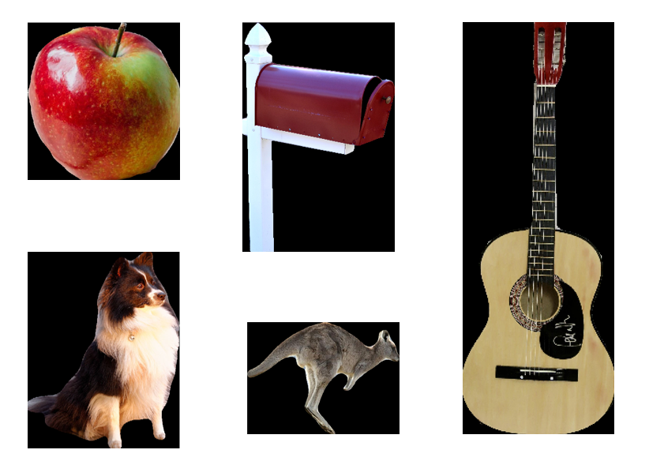
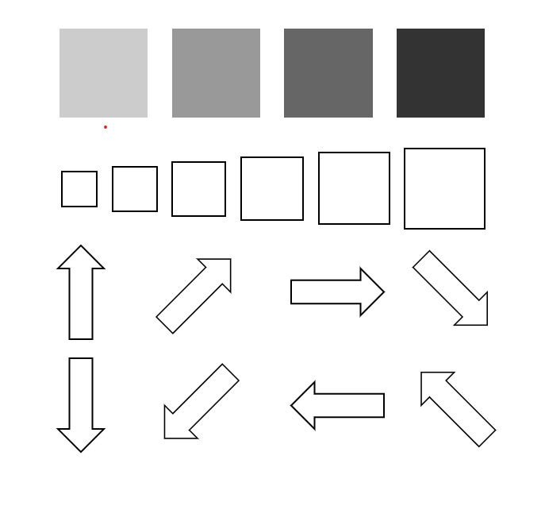
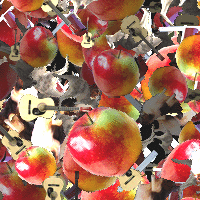
When drawing the assisted-freehand ROI, the outline might not be exactly as desired. Users can right-click on the ROI edges to add waypoints, and then by dragging these waypoints the overall shape as well as details of the ROI can be adjusted.
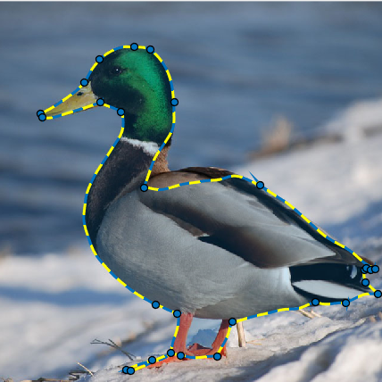
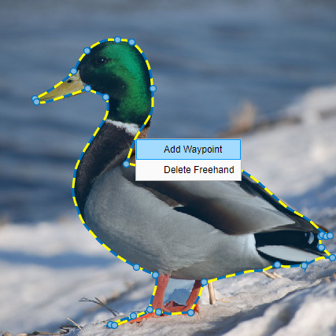
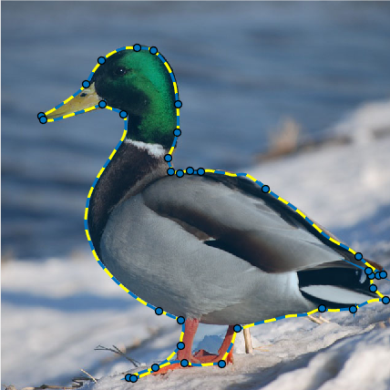